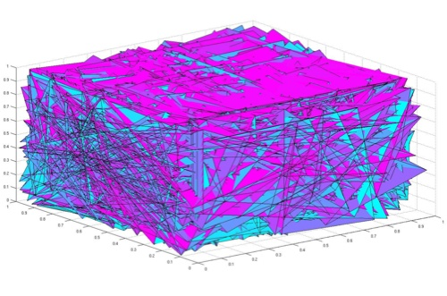

Visualization of 3D paths in MATLAB.
If you are trying to access scientific articles for your research or classwork, you might be interested in a bookmark I developed that will grant access to almost any journal article UH has access to. If you're on an article's page and all you can see is the abstract for instance, clicking this bookmark will 1) redirect you to login with your UH ID, and then 2) return to the article you were on, but now with full access (if the UH library has a subscription to that journal).
To implement this, simply create a new bookmark and paste what's inside the following quotation marks into the bookmark's URL: "javascript:void(location.href=%22http://eres.library.manoa.hawaii.edu/login?url=%22+location.href)"
It works well with large publishing houses like Nature, ScienceDirect/Elsevier, and Wiley Online Library, but there are a few exceptions (like SpringerLink). Please email me if you have any questions or comments. Back.
Mathematics Department | 2565 McCarthy Mall, Keller 418 | Honolulu, HI 96822
To implement this, simply create a new bookmark and paste what's inside the following quotation marks into the bookmark's URL: "javascript:void(location.href=%22http://eres.library.manoa.hawaii.edu/login?url=%22+location.href)"
It works well with large publishing houses like Nature, ScienceDirect/Elsevier, and Wiley Online Library, but there are a few exceptions (like SpringerLink). Please email me if you have any questions or comments. Back.